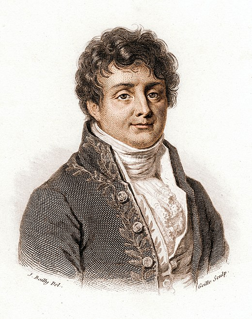

Histoire
Le Pixel
Nos téléphones portables d'aujourd'hui sont équipés de milliards de pixels.
Mais qu'est-ce qu'un pixel réellement ?
Pourquoi tant de gens ont la fausse l'idée, que les pixels sont de petits carrés lumineux ?
Le terme « pixel » est une abréviation
d’« élément d'image »,
inventé par des chercheurs dans les années 1960.
Quelques années plus tard, aux yeux des gens, les pixels deviennent carrés.
Mais en réalité, les pixels ne sont pas de simples carrés, ou points qui se rassemblent pour former une image visuellement lisse.
Ils sont en fait un concept mathématique profond.
Lorsque tous nos anciens formats de médias analogiques, ont été regroupés en un seul format numérique,
cela a marqué le début de l'ère de la lumière numérique.
Toutes nos images, quelqu'elles soient, sont désormais créées à partir de pixels,
marquant ainsi le début d'une nouvelle ère numérique.
Il y a d’ailleurs de fortes chances que vous soyez en train de lire cette phrase grâce aux pixels en ce moment même.
Ils forment les mots et les images sur l’écran de votre appareil.
Presque toutes les images que nous voyons aujourd'hui sont basées sur la lumière numérique,
y compris la plupart des textes imprimés.
Les musées d'art et les jardins d'enfants sont parmi les rares endroits vierge de pixel.
Mais rentrons dans la dimension mathématique et l’essence même de cette invention révolutionnaire.
La Série de Fourier
Presque tout le monde dans l’univers de la science connaît Fourier,
et nous nous aidons de son idée de grande vague tous les jours.
Nous savons que la musique est une somme d'ondes sonores, de différentes fréquences et amplitudes.
Fourier nous apprend que tout audio est aussi composé de vagues ;
qu'un signal unidimensionnel
(un signal en une seule dimension, comme une séquence de sons)
est une somme de belles ondes régulières.
Il nous dit aussi qu'un signal bidimensionnel
(un signal en deux dimensions, comme une image par exemple)
est également une somme d'ondes régulières.
Ce sont des ondes unidimensionnel extrudées hors de la page et vues au-dessus des ondulations.
Il nous apprend qu'on ajoutant ces ondulations ensemble on obtient n'importe quelle image.
Oui, tout est musique !
autrement dit tout est une somme de belles ondes régulières.
Nous en venons maintenant à Vladimir Kotelnikov,
l'homme qui a transformé l'idée de Fourier en pixel.
Le Théorème de Kotelnikov

Kotelnikov a montré comment représenter une image avec ce que nous appelons maintenant des pixels.
Son théorème d'échantillonnage,
publié en 1933,
est le fondement
du monde de l'image moderne.
L’idée de Kotelnikov est basée sur l'idée de Fourier.
Voyons le signal unidimensionnel
de la figure
(un signal audio,
par exemple).
La même idée fonctionne à la fois pour le son
et les images.
Fourier nous explique que tout signal
aussi lisse soit-il,
peut être exprimé sous la forme d'une somme d'ondes de différentes fréquences et amplitudes.
Et bien Kotelnikov lui nous fait trouver la fréquence de Fourier la plus élevée,
puis placer des points de façon régulièrement espacés le long du signal.
Sa découverte est que nous pouvons jeter le signal entre les points, sans ne rien perdre.
Nous pouvons
éclipser l'infinité
des points entre
chaque paire de points.
Cela a permis le monde des médias modernes.
Dans le cas des images, nous appelons chacun
de ces échantillons
un pixel.
Un pixel n'existe qu'en
un point.
Il est de dimension zéro, nous ne pouvons donc pas le voir.
Il a également montré comment restaurer
le signal original à partir des échantillons
(comment rendre visible un pixel invisible).
Cette courbe répète
la forme ondulée
du document
de Kotelnikov de 1933,
nous l'appellons
un épandeur.
Mais cet épandeur parfait a un sérieux défaut :
« il se balance infiniment dans les deux sens. »
C'est bien
en mathématiques,
mais dans le monde réel,
nous ne pouvons pas utiliser des choses infiniment larges.
Nous le remplaçons donc par un épandeur de largeur finie.
Kotelnikov nous fait placer un épandeur
à chaque échantillon.
Puis additionner ensuite les résultats pour obtenir la ligne en gras en haut.
Une image numérique
est comme un lit de clous,
chaque clou étant
un pixel.
Pour restaurer l'image originale, nous étalons chaque pixel avec l'épandeur,
et additionnant les résultats.
Le résultat fournit les infinités manquantes entre les pixels.
L’Omniprésence du Pixel
Déconstruction de l’Imaginaire Collectif
Nous transportons
tous des pixels dans
nos téléphones,
par exemple, stockés dans des fichiers photo,
mais nous ne pouvons pas les voir directement.
Pour les voir,
nous demandons qu'un fichier image soit affiché.
La vitesse étonnante
des ordinateurs d'aujourd'hui,
produit une impression d’instantanéité.
Les pixels numériques sont envoyés au dispositif d'affichage, qui les répartit avec les petites taches lumineuses sur l'écran.
Beaucoup de gens appellent ces spots
des pixels,
mais c’est une erreur !
Les pixels sont : numériques, séparés, rigides et invisibles.
Les petites taches brillantes sont : analogiques, lisses, visibles et se chevauchent.
Les petites taches sont appelées « éléments d'affichage »
pour les distinguer des « éléments d'image »,
qui est l'abréviation de pixel.
Les éléments d'affichage et les pixels sont
deux types de choses fondamentalement différentes.
Les éléments d’affichage
ont été créé pour afficher et rendre tangible les pixels qui sont eux invisibles.
Ils varient d'un fabricant
à l'autre,
d'un écran à l'autre,
et au fur et à mesure que les technologies d'affichage évoluent ;
alors que les pixels sont eux universels et les mêmes partout.
Remarque, nous n’avons pas évoqué le terme
« petit carré » une seule fois dans cette analyse.
Un pixel, un point de zéro dimension et invisible,
ne peut être un carré, et le petit point lumineux d'un dispositif d'affichage n’est généralement pas un carré non plus.
Alors pourquoi tant de gens pensent-ils que les pixels sont de petits carrés ?
le mérite de cette fausse représentation revient généralement à Russell Kirsch,

qui a mis au point les techniques de numérisation en 1957.
En accordant son scanner, Kirsch a choisi de traduire les zones claires et sombres d'une photographie
en une grille de carrés noirs et blancs.
Surement en prenant exemple sur les carreaux d’Ajulejos.
Représentation du Pixel
Dès sa création, et ses premières utilisations dans la photo ou
le cinéma,
les pixels nous ont séduit.
Avec leurs technologie avant-gardistes,
les gens n’ont cessez
de leur vouer un culte.
Représentant imparfaitement
notre mondes en pixels,
tels un écran de fumé,
nous sommes entrainés dans une course à l’innovation,
et au confort.
En s’améliorant constamment,
les innovations liées
aux pixels évoluent
et créer des tournants technologique.
Après que les ordinateurs soient apparus,
les images numériques,
les jeux et
les animations suivirent rapidement.
Le premier jeu électronique et interactif
est apparu en 1951
à Manchester.
Mais, c'était l'ère
des ordinateurs dinosaures, grands, lents et rudimentaire.
Pour passer de cet état primitif, à l'ère de
la lumière numérique,
il fallait une source d'énergie d'une puissance impressionnante
et de nombreuse innovation.
Grâce à la lumière numérique, les pixels d'une image sont allumés ou éteints,
pour représenter la couleur et la luminosité de l'image.
Les pixels sont les éléments inpiduels,
qui composent
une image numérique.
En résumé,
la lumière numérique
est simplement
la quantité de lumière qui sort de chaque petit tache de couleur d’éléments d’affichage dans un écran numérique.
Pour les images en couleurs,
chaque éléments d’affichage est en fait composé de trois petits points de couleur différents
(rouge, vert et bleu),
et la quantité de lumière émise par chaque point de couleur,
détermine la couleur finale d’éléments d’affichage.
Ainsi, au cours des décennies qui ont suivi les années 1960,
les pixels et les éléments d’affichage sont devenus les pivots du domaine numérique,
rendant visible
les éléments :
des traitements de texte, des sites web
des jeux vidéo,
de la télévision haute définition,
des médias sociaux,
de la RV, et bien plus encore.
Nous sommes immergés dans le sillage des pixels,
et d’éléments d’affichage,
telle une vague
dans la mer.
Nous ne voyons plus
leurs l’omniprésence et l’influence grandissante ;
et nous avons même
une fausse interprétation.
La Loi de Moore
En 1965, le principe
de la loi de Moore
a été établi,
bien qu'il soit resté peu compris du grand public.
Les scientifiques se sont inspirées des phénomènes naturels
que sont les supernovas,
pour créer la lumière numérique.
L’énoncé de cette loi est le suivant :
« Tout ce qui est bon dans les ordinateurs,
s'améliore d'un ordre de grandeur,
tous les cinq ans ».
Mais, cela peut se traduire ainsi :
« La densité des composants sur
une puce de circuit intégré,
double tous les 18 mois ».
À l'image de la grappe d'innovation de Joseph Schumpeter,
Dès qu'une innovation
est produite,
il est nécessaire que
les éléments environnant,
évolue de manière équivalente.
Pour la loi de Moore
nous utilisons le terme
« ordre de grandeur »,
plutôt que le terme
« facteur 10 »,
qui est purement arithmétique,
car il suggère une limite mentale.
Un changement d'ordre de grandeur, est à peu près aussi significatif que l'esprit humain peut l'imaginer.
Un changement d'échelle plus important implique un bond conceptuel dans le temps.
La loi de Moore exigeait un changement
tous les cinq ans
Aujourd'hui,
le facteur de la loi de Moore dépasse 100 milliards,
les ordinateurs sont 100 milliards de fois meilleurs qu'en 1965.
Dans quelques années,
ce facteur s'élèvera à
un trillion,
ce qui représente un billion d'ordinateurs encore plus puissants.
Le premier fruit
des innovations découlant de la loi de Moore, a été l'introduction des pixels en couleur.
Les premiers pixels
ont été découverts sur
le simulateur
Apollo Moon Project,
construit au début des années 1967 par
les ingénieurs Rodney Rougelot
et Robert Schumacker pour la NASA.
Cet exemple marqua également une avancée majeure dans
les graphiques 3D
avec ombrage en couleur.
Pixel Application
L'objectif du projet était de modéliser un monde irréel,
de stocker ce modèle dans la mémoire de l’ordinateur,
puis de le transformer en images pour l'afficher sur l’écran.
Cela, en fait indirectement,
les premiers pas
de l’infographie.
Pour reformuler,
nous avons un monde irréel, que nous transformons
en image, via les pixel,
puis nous l’affichons
sur notre écran, avec
les éléments d’affichages.
Rougelot et Schumacker ont créé un modèle
du Module Lunaire Apollo
(véhicule spatial
de conception),
qui n’existait pas encore,
ils l’ont décrit en utilisant la géométrie euclidienne 3D, et la physique newtonienne,
puis l’ont aplati
en une image 2D,
avec une perspective de la Renaissance.
Leur ordinateur a alors échantillonné cette nouvelle scène visuelle en pixels et les a affichés.
Aujourd'hui,
les ordinateurs sont les outils les plus malléables jamais inventés.
La plupart des images graphiques 3D dans le monde d'aujourd'hui, fonctionnent toujours par la formule synergétique (D'Euclide-Newtonie-Renaissance).
Plus impressionnant encore,
nous utilisons constamment cette technique pour créer
les mondes imaginaires,
et les films numériques actuelles (environnement, Map, Design, ...).
La perception quotidienne que nous avons du monde,
est une représentation
en constante évolution,
une forme tridimensionnelle ou 3D.
Elle se compose de
trois dimensions spatiales,
où les principes de Fourier et de Kotelnikov restent applicables.
L'échantillonnage de Fourier est utilisé dans les films numériques pour recréer cette expérience.
Nous désignons chaque instant échantillonné comme une image, et chaque image est composée de pixels.